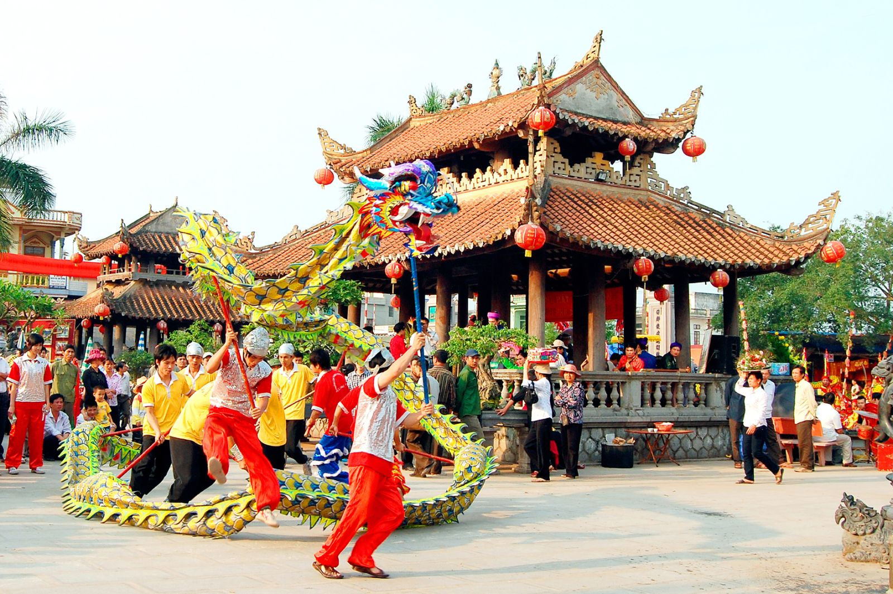
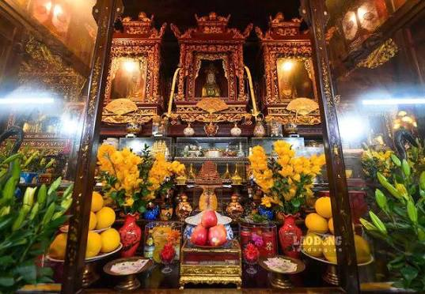

Phủ Dầy, nơi
hồn Việt hội tụ.
Gìn giữ & lan tỏa vẻ đẹp văn hóa Phủ Dầy, Nam Định. Cùng khám phá lễ hội, tín ngưỡng thờ Mẫu và những công trình linh thiêng qua hành trình Đan Hồn Việt.
Bắt đầu khám pháMột lễ hội, muôn sắc màu di sản.
Lễ hội Phủ Dầy là một lễ hội truyền thống nổi tiếng của tỉnh Nam Định, được tổ chức hằng năm để tưởng nhớ và tôn vinh Thánh Mẫu Liễu Hạnh – một trong những vị thánh quan trọng của tín ngưỡng thờ Mẫu Tam phủ của người Việt.
Không gian rực rỡ sắc màu từ trên cao tại quần thể di tích Phủ Dầy, Vụ Bản, Nam Định thu hút hàng vạn du khách thập phương về chiêm bái, trẩy hội và hòa mình vào các hoạt động văn hóa tâm linh đặc sắc.
Tìm hiểu nghi lễ & Hầu đồng ↗

Khám phá vẻ đẹp Phủ Dầy

Quần thể di tích
Ghé thăm Phủ Chính Tiên Hương, Phủ Vân Cát và những dấu ấn kiến trúc giàu bản sắc.
Khám phá ↗
Nghi lễ & Hầu đồng
Lắng nghe hát văn, tìm hiểu nghi lễ và tín ngưỡng thờ Mẫu của người Việt.
Tìm hiểu ↗
Kinh nghiệm đi lễ
Chuẩn bị trang phục, lễ vật, hành trình và cách ứng xử phù hợp trước chuyến đi.
Xem hướng dẫn ↗Tưởng nhớ Thánh Mẫu Liễu Hạnh
Lễ hội Phủ Dầy được tổ chức nhằm tưởng nhớ Thánh Mẫu Liễu Hạnh, một nhân vật linh thiêng trong tín ngưỡng dân gian Việt Nam. Theo truyền thuyết, bà là vị tiên giáng trần, có công giúp đỡ nhân dân và được người dân tôn kính.
Những hoạt động đáng trải nghiệm
Nghi lễ rước kiệu: Tổ chức trang trọng, thể hiện lòng thành kính với Thánh Mẫu.
Hát văn, hầu đồng: Những hình thức sinh hoạt tín ngưỡng đặc trưng của đạo Mẫu.
Các trò chơi dân gian: Kéo co, đấu vật, cờ người và nhiều hoạt động vui chơi truyền thống.
Dâng hương, lễ Mẫu: Người dân và du khách đến cầu bình an, may mắn.
Địa điểm: Quần thể di tích Phủ Giầy, huyện Vụ Bản, tỉnh Nam Định. Thời gian: Từ ngày mùng 1 đến mùng 10 tháng 3 âm lịch hằng năm. Nhân vật được thờ phụng: Thánh Mẫu Liễu Hạnh.
Chuẩn bị cho chuyến đi ↗